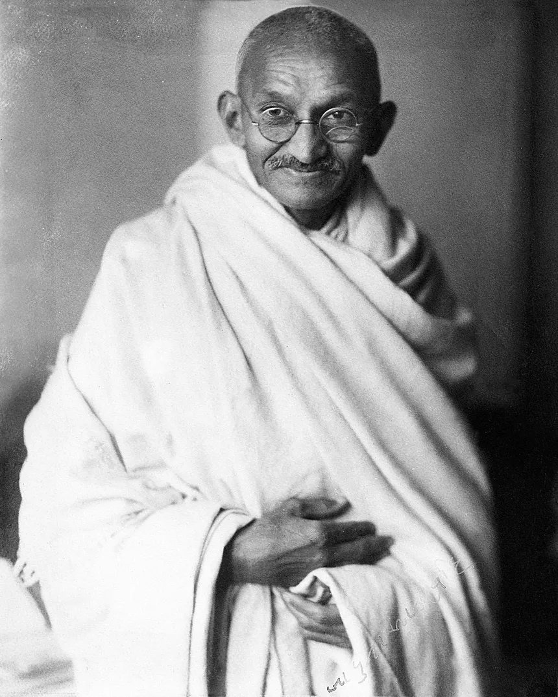

Mahatma Gandhi|The Warriror
1869 - 1948
1869 - 1948
Mohandas Karamchand Gandhi[pron 1] (2 October 1869 – 30 January 1948) was an Indian lawyer, anti-colonial nationalist and political ethicist who employed nonviolent resistance to lead the successful campaign for India's independence from British rule. He inspired movements for civil rights and freedom across the world. The honorific Mahātmā (from Sanskrit 'great-souled, venerable'), first applied to him in South Africa in 1914, is now used throughout the world. Born and raised in a Hindu family in coastal Gujarat, Gandhi trained in the law at the Inner Temple, London, and was called to the bar at age 22 in June 1891. After two uncertain years in India, where he was unable to start a successful law practice, he moved to South Africa in 1893 to represent an Indian merchant in a lawsuit. He went on to live in South Africa for 21 years. It was here that Gandhi raised a family and first employed nonviolent resistance in a campaign for civil rights. In 1915, aged 45, he returned to India and soon set about organising peasants, farmers, and urban labourers to protest against excessive land-tax and discrimination.
Early life and background Parents Gandhi's father, Karamchand Uttamchand Gandhi (1822–1885), served as the dewan (chief minister) of Porbandar state.[4][5] His family originated from the then village of Kutiana in what was then Junagadh State.[6] Although he only had been a clerk in the state administration and had an elementary education, Karamchand proved a capable chief minister.[7] During his tenure, Karamchand married four times. His first two wives died young, after each had given birth to a daughter, and his third marriage was childless. In 1857, he sought his third wife's permission to remarry; that year, he married Putlibai (1844–1891), who also came from Junagadh,[7] and was from a Pranami Vaishnava family.[8] Karamchand and Putlibai had four children: a son, Laxmidas (c. 1860–1914); a daughter, Raliatbehn (1862–1960); a second son, Karsandas (c. 1866–1913).[9][10] and a third son, Mohandas Karamchand Gandhi[11][12] who was born on 2 October 1869[13] in Porbandar (also known as Sudamapuri), a coastal town on the Kathiawar Peninsula and then part of the small princely state of Porbandar in the Kathiawar Agency of the British Raj. In 1874, Gandhi's father Karamchand left Porbandar for the smaller state of Rajkot, where he became a counsellor to its ruler, the Thakur Sahib; though Rajkot was a less prestigious state than Porbandar, the British regional political agency was located there, which gave the state's diwan a measure of security.[14] In 1876, Karamchand became diwan of Rajkot and was succeeded as diwan of Porbandar by his brother Tulsidas. His family then rejoined him in Rajkot.[15] Childhood As a child, Gandhi was described by his sister Raliat as "restless as mercury, either playing or roaming about. One of his favourite pastimes was twisting dogs' ears."[16] The Indian classics, especially the stories of Shravana and king Harishchandra, had a great impact on Gandhi in his childhood. In his autobiography, he states that they left an indelible impression on his mind. He writes: "It haunted me and I must have acted Harishchandra to myself times without number." Gandhi's early self-identification with truth and love as supreme values is traceable to these epic characters.[17][18] The family's religious background was eclectic. Mohandas was born into a Gujarati Hindu Modh Bania family.[19][20] Gandhi's father Karamchand was Hindu and his mother Putlibai was from a Pranami Vaishnava Hindu family.[21][22] Gandhi's father was of Modh Baniya caste in the varna of Vaishya.[23] His mother came from the medieval Krishna bhakti-based Pranami tradition, whose religious texts include the Bhagavad Gita, the Bhagavata Purana, and a collection of 14 texts with teachings that the tradition believes to include the essence of the Vedas, the Quran and the Bible.[22][24] Gandhi was deeply influenced by his mother, an extremely pious lady who "would not think of taking her meals without her daily prayers... she would take the hardest vows and keep them without flinching. To keep two or three consecutive fasts was nothing to her."[25] Gandhi (right) with his eldest brother Laxmidas in 1886[26] At age 9, Gandhi entered the local school in Rajkot, near his home. There, he studied the rudiments of arithmetic, history, the Gujarati language and geography.[15] At the age of 11, he joined the High School in Rajkot, Alfred High School.[27] He was an average student, won some prizes, but was a shy and tongue tied student, with no interest in games; his only companions were books and school lessons.[28] Marriage In May 1883, the 13-year-old Mohandas was married to 14-year-old Kasturbai Gokuldas Kapadia (her first name was usually shortened to "Kasturba", and affectionately to "Ba") in an arranged marriage, according to the custom of the region at that time.[29] In the process, he lost a year at school but was later allowed to make up by accelerating his studies.[30] His wedding was a joint event, where his brother and cousin were also married. Recalling the day of their marriage, he once said, "As we didn't know much about marriage, for us it meant only wearing new clothes, eating sweets and playing with relatives." As was the prevailing tradition, the adolescent bride was to spend much time at her parents' house, and away from her husband.[31] Writing many years later, Mohandas described with regret the lustful feelings he felt for his young bride: "even at school I used to think of her, and the thought of nightfall and our subsequent meeting was ever haunting me." He later recalled feeling jealous and possessive of her, such as when she would visit a temple with her girlfriends, and being sexually lustful in his feelings for her.[32] In late 1885, Gandhi's father Karamchand died.[33] Gandhi, then 16 years old, and his wife of age 17 had their first baby, who survived only a few days. The two deaths anguished Gandhi.[33] The Gandhi couple had four more children, all sons: Harilal, born in 1888; Manilal, born in 1892; Ramdas, born in 1897; and Devdas, born in 1900.[29] In November 1887, the 18-year-old Gandhi graduated from high school in Ahmedabad.[34] In January 1888, he enrolled at Samaldas College in Bhavnagar State, then the sole degree-granting institution of higher education in the region. However, he dropped out, and returned to his family in Porbandar.[35]
Made with ♥ by akmadd456